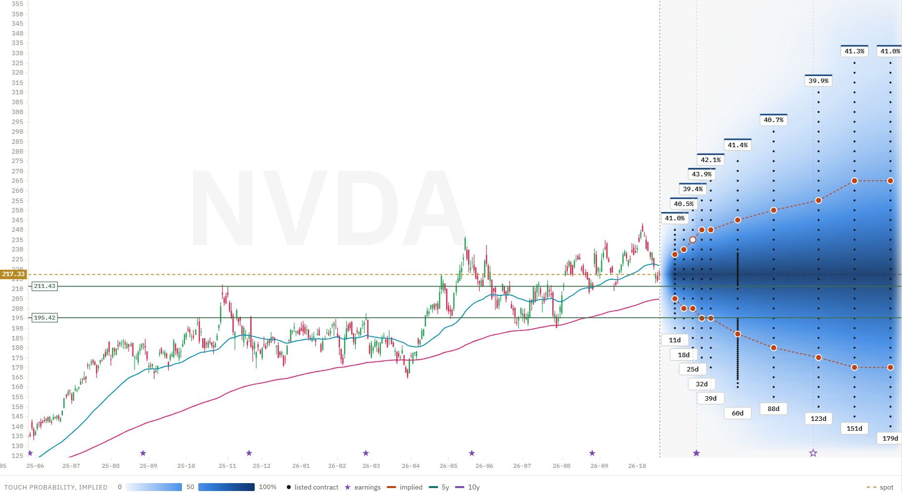

Cash secured puts: how to earn the premium without getting assigned
Selling a cash secured put pays you a premium today. The goal of this guide is to keep that premium: to pick the put with the most premium and the lowest chance of being assigned, and to know what to do when the stock moves against you. Throughout the guide we work through a real example: NVDA's option chain on 19 October 2026, analysed with OptionsCone.
In short: OptionsCone shows, for every strike and expiry of NVDA, how likely the price is to touch the strike and to finish below it: from option prices (risk-neutral pricing) and from NVDA's own realized moves. Next to them it shows profitability and liquidity figures for every contract, and it lets you draw support levels, trend lines and moving averages over the probabilities. Together they show which puts pay well and still sit where NVDA is unlikely to reach.
What is a cash secured put?
A cash secured put is an option strategy in which you sell a put and set aside the cash to buy 100 shares at the strike price. The buyer of the put pays you a premium, and in return gets the right to sell you the shares at the strike until the put expires.
- If NVDA stays above the strike, the put expires worthless and you keep the premium.
- If NVDA finishes below the strike, you are assigned: you buy 100 shares at the strike, while the stock trades lower.
Some investors accept assignment on purpose, as the first step of the wheel strategy, and then sell covered calls on the shares. This guide is about the other goal: earning the premium without owning the stock. You will also hear the term naked put. It is used in two ways: strictly, for a put sold on margin without the full cash in reserve, and more broadly, for any sold put that is not hedged by another option. The choice of the strike works the same way in every case.
What is the best strike for a cash secured put?
The strike decides how much the put pays and how often you get assigned. Close to the current stock price, the premium is attractive, but NVDA only has to fall a little before the put ends in the money. Far below the price, assignment is unlikely, but the put pays very little. The best cash secured put strike sits between the two: the most premium for the lowest chance of assignment.
How likely am I to get assigned?
Download NVDA in OptionsCone and look at the probability cone below the price. Every dot is a listed put. Set the contour to expire and, for example, 20%: the line then marks, expiry by expiry, the strike NVDA finishes below with a 20% probability. That is how often a put at that strike would end in the money and lead to assignment.
Switch the contour to touch and the line moves further away from the price. A touch, the price reaching the strike at any point before expiry, is roughly twice as likely as finishing below it. The touch is the moment that matters for a put seller, because that is when the position comes under pressure and you decide whether to defend it.
Delta is not the probability of being assigned
Many put sellers use delta as the chance of assignment and sell, for example, a "30-delta put". For puts this underestimates the risk. A put's delta is smaller than its risk-neutral probability of finishing in the money, so a 30-delta put ends in the money more often than 30% of the time. The gap grows with implied volatility and with the days to expiry, which makes it large on a volatile stock like NVDA and on puts with several months to run.
Our study delta is not the probability of finishing in the money shows how large the gap gets. OptionsCone shows the probability of finishing below each strike directly, so you can read the assignment probability itself instead of a delta rule of thumb.
Reading the chart: support levels, trend lines and moving averages
Probabilities describe how far a stock tends to move. Technical analysis looks at where it has turned before. Many put sellers combine the two, and OptionsCone draws both on the same chart.
- Support levels: technical analysts look for prices where a stock has repeatedly stopped falling, often earlier lows. Many put sellers place the strike below such a level, so the price would first have to break through it. Draw a horizontal line at the level with the horizontal tool: where it crosses an expiry, the dots on the line show how likely NVDA is to touch that level by then.
- Trend lines: trend lines are traditionally drawn through the rising lows of an uptrend. Drawn with the trend tool and extended into the cone, the line shows where the trend would run at each expiry, and how far a strike sits below it.
- Moving averages: many traders watch exponential moving averages, such as the 50-day and the 200-day, as dynamic support. OptionsCone draws two EMAs with lengths of your choice.
A strike below a support level and outside the probability contour has two arguments for it: one from the chart and one from the probabilities.

How option prices compare with NVDA's realized moves
The probabilities in the cone, in implied mode, come from option prices. Options are priced risk-neutrally, as if the stock grew only at the risk-free rate, which is explained in detail in how options are priced. On the put side the comparison with the stock's own history often runs the other way than on the call side: option prices frequently charge more for falls than the stock has actually shown.
OptionsCone puts the risk-neutral probabilities next to probabilities from NVDA's own realized moves. Blue and red mark, strike by strike, where option prices assume more or less movement than NVDA has shown, and where a put is priced above or below the fair price for NVDA's own moves. For a put seller those are the strikes where the premium pays more than the stock's realized moves would justify.
Earnings: the jump risk of a short put
The stars on the date axis mark NVDA's earnings dates, and the badge above each expiry shows its implied volatility. An expiry that includes the report pays a noticeably higher premium. The reason is the jump: NVDA can open the next morning far below the previous close, past the strike and past any support level, without ever trading in between. Rolling or closing the put is then no longer possible at the levels you planned for. Whether the put should run across the report is part of choosing the expiry.
What to do when NVDA falls toward the strike
Even a well chosen put can come under pressure. There are three common ways to respond:
- Roll down and out for a credit: buy the put back and sell a new one at a lower strike and a later expiry, for more premium than the buyback costs. This gives the trade more time and more room to be right. In OptionsCone you can see right away how likely the new strike is to be reached by its expiry.
- Close the position: buy the put back and accept the loss, for example once the loss reaches a set limit or a support level breaks. This works like a stop loss on the put.
- Accept assignment: let the put expire in the money and buy the shares, as described above.
Limiting the risk at entry: the put credit spread
A cash secured put can lose almost the whole strike value if the stock collapses. Buying a second put with a lower strike and the same expiration caps that loss: the bought put pays out below its strike, so the maximum loss is the distance between the two strikes minus the premium received. This combination is called a put credit spread, and it ties up far less cash than a cash secured put.
Where the liquidity is highest: open interest and volume
A put is only as good as the price at which you can sell it, and later buy it back when you roll or close it. Switch the cone to open int. and volume:
- Open interest shows where large positions sit. Strikes with high open interest are where other traders are active, which usually means you can get in and out at fair prices.
- Volume shows where trading happened in the session of the download. A put with open interest but no volume may be harder to trade on the day you need to.
The contract details that open for each option show whether its quote is reliable enough to read a volatility from, with a yellow or red mark where it is not. Puts with a yellow or red mark are better left alone.
How to compare cash secured puts in OptionsCone
Click a contract and its tooltip stays open. Then switch between the maps: the same contract shows its values in each of them.
- Probability: how likely NVDA touches the strike, and how likely it finishes below it.
- Open interest and volume: how actively this put is traded.
- Time value per day: what this put earns you for every day until expiry.
- Implied volatility: where IV is higher, the put pays more for the same distance from the price.
You can also step through the contracts with the arrow keys: up and down move to the next listed strike of the same expiry, left and right to the neighbouring expiry. The tooltip follows, so you can scan a whole row of candidates in a few seconds and pick the one that fits best.
Which expiry for a cash secured put?
Many put sellers choose expiries between 30 and 45 days, where time value decays quickly while the premium is still worth having. Shorter puts pay more per day, but you sell more often and pay the spread each time. Longer puts pay more in total, but NVDA has more time to fall to the strike. To compare expiries, pick one strike per expiry with a similar probability of finishing in the money, which is where the contour line crosses each expiry, and compare what they pay per day. Check the earnings dates before you choose.
Worked example: three NVDA cash secured puts compared
From a download of NVDA on 19 October 2026 at 14:23, with the stock at $217.33. These figures illustrate the comparison and are not a recommendation.
| Put | Distance | Finishes below (option prices) | Finishes below (NVDA's moves) | Next support above the strike | Time value per day (per contract) | Open interest |
|---|---|---|---|---|---|---|
| 200 put, 13 Nov (25 days) | −8.0% | 21.4% | 15.7% | ~211 | $9.50 | 8,665 |
| 195 put, 20 Nov (32 days) | −10.3% | 21.4% | 13.9% | ~195 | $9.16 | 27,856 |
| 185 put, 18 Dec (60 days) | −14.9% | 19.0% | 11.3% | ~195 | $5.21 | 20,102 |
Data: NVDA option chain, downloaded on 19 October 2026 at 14:23 New York time, quotes delayed about 15 minutes. All figures calculated with OptionsCone.
Read it as: All three puts have about a 20% chance of finishing below the strike from option prices, and NVDA's realized moves put it lower for each of them, between 11% and 16%. The 200 put of 13 November pays the most per day and expires before NVDA's earnings report on 17 November, but it sits only 8% below the price, between the support at about 211 and the one at about 195. The 195 put of 20 November pays almost as much per day from just below the support at about 195, but it expires after the report. If the report disappoints, NVDA can open the next morning well below the strike without ever trading at the prices in between, which leaves no chance to roll or close the put before the drop. The 185 put of 18 December sits below both support levels and gives NVDA the most room to fall, but in exchange it earns only a little more than half as much per day, and the trade stays open about twice as long.
Cash secured put FAQ
Which delta should I use for a cash secured put?
Delta is not the probability of being assigned. A put's delta is smaller than its risk-neutral probability of finishing in the money, so a 30-delta put ends in the money more often than 30% of the time. The gap grows with implied volatility and the days to expiry. Delta also comes from option prices alone, so it says nothing about how the stock has actually moved. Reading the assignment probability directly, from option prices and from the stock's own moves, is clearer than a delta rule of thumb. Our study delta is not the probability of finishing in the money shows the gap in numbers.
How do I avoid assignment on a cash secured put?
Choose a strike with a low probability of finishing in the money, ideally below a support level, check whether an earnings date falls before expiry, and defend the position when the strike comes under pressure, by rolling it down and out for a credit or by closing it.
When should I roll a cash secured put?
Many put sellers roll when the stock approaches or touches the strike. Rolling down and out means buying back the put and selling one at a lower strike and a later expiry for a net credit, which gives the trade more time and more room.
What is the difference between a cash secured put and a naked put?
Both are a sold put. With a cash secured put the full cash to buy the shares is set aside. Strictly, a naked put is sold on margin, without the full cash in reserve, which ties up less capital but allows larger losses relative to the account. The term is also used more broadly for any sold put that is not hedged by another option, as opposed to a spread. Either way the largest possible loss is the strike minus the premium, if the stock falls to zero.
Should I sell puts before earnings?
An expiry that includes an earnings report pays a higher premium, because the stock can gap overnight past the strike and past any support level. Whether the put should run across the report is part of choosing the expiry.
We use NVDA as an example. The same steps work for any stock with listed options. Nothing on this page is a recommendation to buy or sell NVDA stock or options.
Try it on your own stock
Every figure on this page comes from one download and a few clicks. The manual explains each control.